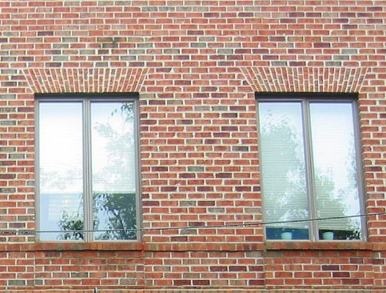
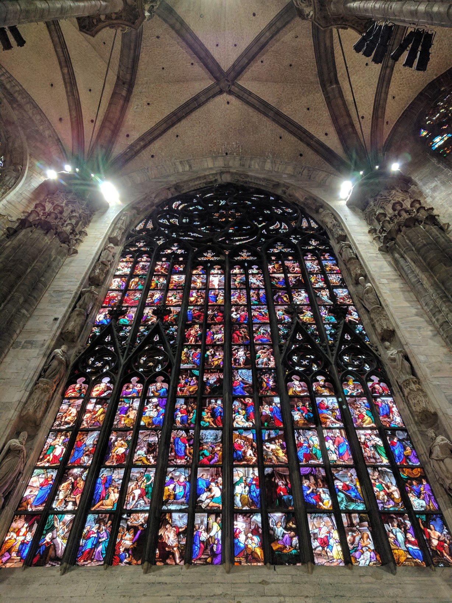

A window is an opening in a wall, door, roof or vehicle that allows the passage of light and, if not closed or sealed, air and sound.
Modern windows are usually glazed or covered in some other transparent or translucent material. Windows are held in place by frames. Many glazed windows may be opened, to allow ventilation, or closed, to exclude inclement weather. Windows often have a latch or similar mechanism to lock the window shut.
History
Etymology
The English language-word window originates from the Old Norse 'vindauga', from 'vindr – wind' and 'auga – eye', i.e., wind eye. In Norwegian Nynorsk and Icelandic the Old Norse form has survived to this day (in Icelandic only as a less used synonym to gluggi), in Swedish the word vindöga remains as a term for a hole through the roof of a hut, and in the Danish language 'vindue' and Norwegian Bokmål 'vindu', the direct link to 'eye' is lost, just like for 'window'. The Danish (but not the Bokmål) word is pronounced fairly similarly to window.
Window is first recorded in the early 13th century, and originally referred to an unglazed hole in a roof. Window replaced the Old English eagþyrl, which literally means 'eye-hole,' and 'eagduru' 'eye-door'. Many Germanic languages however adopted the Latin word 'fenestra' to describe a window with glass, such as standard Swedish 'fönster', or German 'Fenster'. The use of window in English is probably because of the Scandinavian influence on the English language by means of loanwords during the Viking Age. In English the word fenester was used as a parallel until the mid-18th century. Fenestration is still used to describe the arrangement of windows within a façade, as well as defenestration, meaning to throw something out of a window.
More history
The earliest windows were just holes in a wall. Later, windows were covered with animal hide, cloth, or wood. Shutters that could be opened and closed came next. Over time, windows were built that both protected the inhabitants from the elements and transmitted light, using multiple small pieces of translucent material (such as flattened pieces of translucent animal horn, thin slices of marble, or pieces of glass) set in frameworks of wood, iron or lead. In the Far East, paper was used to fill windows. The Romans were the first known to use glass for windows, a technology likely first produced in Roman Egypt. Namely, in Alexandria ca. 100 AD cast glass windows, albeit with poor optical properties, began to appear, but these were small thick productions, little more than blown glass jars (cylindrical shapes) flattened out into sheets with circular striation patterns throughout. It would be over a millennium before a window glass became transparent enough to see through clearly, as we think of it now.
Over the centuries techniques were developed to shear through one side of a blown glass cylinder and produce thinner rectangular window panes from the same amount of glass material. This gave rise to tall narrow windows, usually separated by a vertical support called a mullion. Mullioned glass windows were the windows of choice among European well-to-do, whereas paper windows were economical and widely used in ancient China, Korea and Japan. In England, glass became common in the windows of ordinary homes only in the early 17th century whereas windows made up of panes of flattened animal horn were used as early as the 14th century.
Modern-style floor-to-ceiling windows became possible only after the industrial plate glass making processes were perfected. Modern windows are usually filled with glass, although a few are transparent plastic.
Types
Fixed
A window that cannot be opened, whose function is limited to allowing light to enter (unlike an unfixed window, which can open and close). Clerestory windows are often fixed. Transom windows may be fixed or operable. This type of window is used in situations where light or vision alone is needed as no ventilation is possible windows without the use of trickle vents or overglass vents.
Eyebrow
The term eyebrow window is used in two ways: a curved top window in a wall or in an eyebrow dormer; and a row of small windows usually under the front eaves such as the James-Lorah House in Pennsylvania.
Tilt and slide
A window (more usually a door-sized window) where the sash tilts inwards at the top and then slides horizontally behind the fixed pane.
Pictures
Woven bamboo window in Japan

Windows of a brick building in Washington DC
A Russian Revival-style window
Window cracking Windows can crack if you throw rocks in them.

Stained glass in Duomo di Milano
Windows became a popular figure in Computer Science